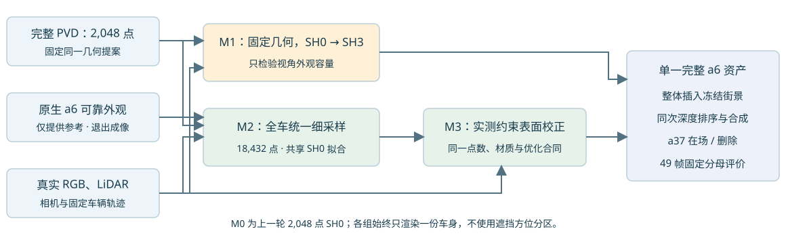
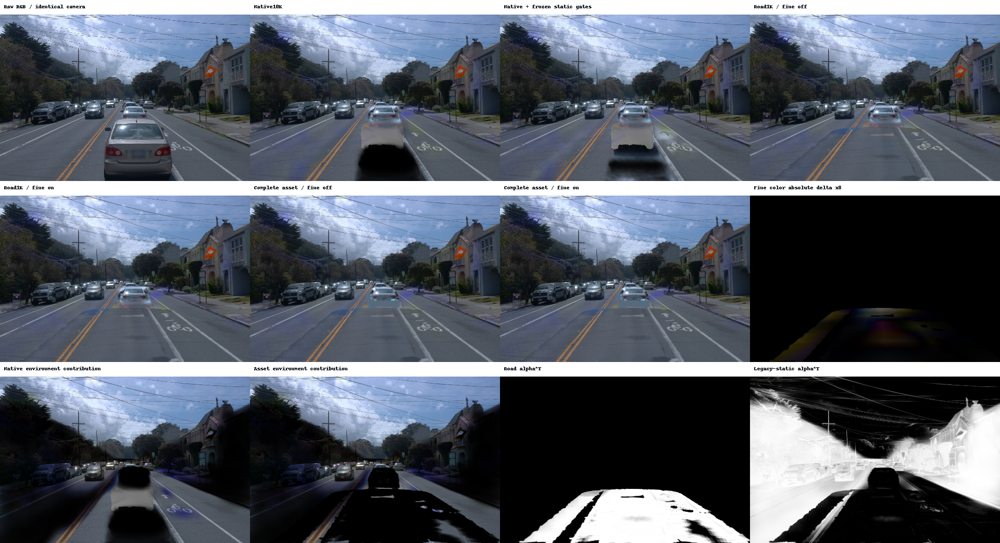

Scene008：完整 a6 的材质、采样与实测校正
所有对照始终只使用一份完整资产；原生 a6 只提供观测关联和可靠外观参考，退出新场景成像。车辆轨迹、a37、旧静态、环境与已有道路恢复全部冻结。没有按下半部、左右或上部设置接管规则。

这是机制验证，尚未达到原生已观测外观质量。M1只改视角外观容量；M2保留SH0、改变全车高斯离散；M3在M2相同点数和材质容量上，只增加实测约束的中心校正。各组独立保存与完整49帧评价。仍使用原生高斯合成，没有MOG-2不透明表面首交保证。
同一裁剪的黑底对象
依次为真实可见RGB、原生a6、M0完整2048点SH0、M1相同几何SH3、M2完整18432点SH0、M3实测中心校正SH0。未知部位的低容量颜色仍为推断外观。
raw113
同一资产在场 / 删除配对
左两列为参考/新资产且a37在场，右两列为参考/新资产且删除a37。M3与M2直接配对，避免把采样收益误算为几何校正收益。
固定已观测分母
M1受约束SH3只小幅改善；M2统一细采样的RGB与深度收益更明显。M3本轮234点实测法向校正没有继续改善RGB，不放宽门槛追逐收益。当前优先保留M2作后续单一资产研究基线，所有组仍作为实验资产保存。
all49使用39308个原始可见核心像素和8930个LiDAR深度测量；HELD9为新增外观/校正步骤的内部留出。RGB为sRGB通道平均绝对误差，深度为渲染alpha加权camera-z误差（米），覆盖为对象alpha。没有按新模型alpha缩小评价域。
| 范围 | 资产 | RGB MAE | 深度 MAE / m | 可见核心覆盖 |
|---|
| all49 | Native | 0.01873 | 0.26857 | 0.99989 |
| all49 | M0 | 0.04951 | 0.32646 | 0.98518 |
| all49 | M1 | 0.04857 | 0.32646 | 0.98518 |
| all49 | M2 | 0.03812 | 0.27498 | 0.99659 |
| all49 | M3 | 0.03817 | 0.27419 | 0.99661 |
| HELD | Native | 0.02049 | 0.30916 | 0.99989 |
| HELD | M0 | 0.04982 | 0.31969 | 0.98468 |
| HELD | M1 | 0.04904 | 0.31969 | 0.98468 |
| HELD | M2 | 0.03829 | 0.26396 | 0.99630 |
| HELD | M3 | 0.03834 | 0.26316 | 0.99632 |
M1的alpha与depth_sum相对M0逐像素完全相同。M2确实改变中心离散、尺度、透明度及合成深度，不能叫逐像素几何等价；它的收益不自动证明PVD真实形状更准确。M3仅改变有可靠多帧支持的局部中心；其拟合残差降低不能代替渲染评价。
BUILD深度7311点、内部HELD深度1619点。父级PVD和native已有同场景信息；200个PVD条件点含14个来自HELD帧。内部留出不能声称独立几何真值、隐藏表面准确率或跨场景泛化。
实测约束到底改了什么
实际通过校正的中心 234 / 18432；未知区保持不动。完整数值见审计。
只读取BUILD40确认可见的原始LiDAR样本；通过跨帧稳健平面、交替帧互证、法向一致性与时序一致性后，沿固定局部法向施加有界位移。未知中心位移严格为零，normal、scale、opacity、点数、SH0容量及颜色拟合起点保持一致。支持半径依据采样间距，用一套全车规则。通过支持检查的中心是至多25cm邻域平面的插值或有限外推，不是这些中心本身被真实直接观测的证书；本对照不能校正切向误差、法向、拓扑或未观测整车。
原始可见标签允许20cm关联容差，因此又做同源投影/深度一致核对。该核对使用同一LiDAR来源，不是独立精度证据。工程容差2cm不等于已校准的传感器噪声。实际支持、位移与不变量 · 固定合同
保留域变化与尾部
相对各组直接参考的RGB变化。M1/M2参考M0，M3参考M2；均值很小也不能掩盖少量大变化。outside可能包含完整资产新增显露的区域，变化不自动等同于其他真实表面受损，需结合可见a37、道路与原图判断。
| 对照 | 状态 | 固定区域 | 平均RGB变化 | 变化>0.05像素数 |
|---|
| m1 | keep | a37 | 0.0000004 | 0 |
| m1 | keep | road_visible | 0.0000029 | 22 |
| m1 | keep | outside | 0.0000328 | 1342 |
| m1 | delete | road_visible | 0.0000079 | 56 |
| m1 | delete | outside | 0.0000504 | 1964 |
| m2 | keep | a37 | 0.0000006 | 0 |
| m2 | keep | road_visible | 0.0000018 | 13 |
| m2 | keep | outside | 0.0000789 | 2284 |
| m2 | delete | road_visible | 0.0000060 | 30 |
| m2 | delete | outside | 0.0001073 | 3125 |
| m3 | keep | a37 | 0.0000000 | 0 |
| m3 | keep | road_visible | 0.0000002 | 1 |
| m3 | keep | outside | 0.0000011 | 3 |
| m3 | delete | road_visible | 0.0000003 | 3 |
| m3 | delete | outside | 0.0000013 | 6 |
路面色块与全图偏蓝的单独诊断
路面割裂主要来自恢复道路插入后与原生路面的颜色衔接。在raw105/113/130，关闭后加的世界道路颜色场，接缝仍在；颜色场反而略减边界跳变。完整a6替换对该边界梯度指标影响为零。颜色场在road贡献<1e−6之外的最大RGB影响≤2.98e−8，因此不能解释全图偏蓝。
原始RGB本身就偏冷，native背景也延续了这种色调。三帧原图蓝指数B−(R+G)/2为0.0756–0.0789，native为0.0785–0.0811。环境项是(1−alpha)×方向背景，主要在低覆盖背景中贡献冷色；它不是给不透明车体或整张图施加蓝色滤镜。均值含天空，这些数字不足以认定整段视频白平衡错误。
颜色衔接的更早根因还没有唯一拆分为道路参考纹理、阴影监督、静态gate或方向背景拟合。车辆对照继续冻结道路；这次没有通过全图调色掩盖接缝。

归因、逐帧数字、源码行与限制 · 完整诊断指标
复核与资产
每组正式外观优化2000步，额外smoke与工程重放单列。真实GPU smoke覆盖保存、完整状态恢复后的下一步逐值相等、资产重载、联合合成和下一阶段入口。第一次SH3 smoke发现通用稀疏GPU归约不确定，改为固定树FP64积累后通过；M2 smoke发现旧Runtime导入遮蔽，在正式拟合前修复。正式数值合同与预算保持不变。
独立SciPy/伴随/确定性/原SH0求解器核对 · 比较表CSV · 完整汇总 · 验收状态 · M1资产 · M2资产 · M3资产
独立加载接口为source/sh_asset.py；同目录full_pvd.py只提供几何字段、序列化与哈希。资产不依赖原生a6成像。原场景外部残留静态层仍保留，没有宣称全部静态遮挡已解决。AutoDL保持开机。